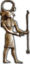

De: La Frikipedia, la enciclopedia extremadamente seria.
De: La Frikipedia, la enciclopedia extremadamente seria. De: La Frikipedia, la enciclopedia extremadamente seria.
| De la serie imperios antiguos: | |||||
| Confederate States of America | |||||
| |||||
| Lema: "A Dios rogando y al negro esclavizando" | |||||
| Himno: Tres, pero ninguno oficial
| |||||
|
| |||||
| Capital(es) | Varió a medida que avanzaba la guerra (siempre hacia el sur) | ||||
| Mayor ciudad | Nueva Orleans | ||||
| Lenguas oficiales | Inglés, Irlandés y Bajo sajón | ||||
| Religión oficial | Presbisterianismo esclavista | ||||
| Gobierno | República esclavista y federal | ||||
| Presidente de la federación | Jefferson Davis | ||||
| Fecha de fundación | 1861 | ||||
| Caída | 1865 | ||||
| Edad de oro | ¡Never! | ||||
| Periodo de Estancamiento o reseción | 1862 | ||||
| Máxima Extensión | 1,995,392 km2 | ||||
| Forma de economía | Agraria, esclavista y algodonera | ||||
| Estados que se despacho | Un par de villas de Virginia | ||||
| Población calculada | 9,103,332 (sin contar | ||||
| Moneda | Dólar (sin la efigie de Lincoln) | ||||
| Zona horaria | No interesa ni a la tía Pepa | ||||
| Legado(s) | las barba confederada | ||||
| ¿Por que se vino abajo? | Porque se picaron con los inglesitos | ||||
| | |||||
Los Estados Confederados de América, conocidos por su vecino del norte como Confederate States of America (C.S.A.), fueron un país formado por 11 estados sureños entre 1861 y 1865. Habitado únicamente por hombres barbudos vestidos con uniformes grises y esclavos negros sin zapatos, su principal ciudad era Nueva Orleans. Oficialmente sólo fue reconocido por el glorioso y racano Imperio británico, Prusia, y los negreros criollos de Cuba. Su industria se basaba en la fabricación de rifles Springfield y carabinas Remington, aunque su principal actividad económica consistía en la venta de esclavos y la recreación de batallas de la Guerra de Secesión, por cuyo visionado hacían pagar 3$. Exportaban buques de guerra y granadas de artillería, sobre todo de La Pérfida Albión. Su agricultura era un desastre porque a los generalotes de la época sólo se les ocurría librar las batallas en campos de cultivo. Políticamente hablando, eran comparables a Etiopía en cuanto a libretades personales, y se cree que desconocían el voto. Sus ciudadanos suelen ser los malos en películas como "Gettuysburg" u otros plagios de menor calidad.
Fue más bien corta, lamentablemente afortunadamente. En 1860, los estados sureños (Texas y otros de menor envergadura), decidieron separarse de los estados norteños (poblados fundamentalmente por irlandeses católicos, gnomos y checos marxistas herejes) para aplicar libremente la política que rezaba así: "El hombre blanco es superior al hombre negro, y la tiene más larga", con el bondadoso y altruísta objetivo, según párrocos radicales presbiterianos, de actuar como guardianes de los afectuosos y leales desamparados negros. Abraham Lincoln, escocés barbudo feo que regentaba la casa Blanca, negó que nadie tuviera Cojones para cortar el bacalao en lugar de él, y la emprendió a ladrillazos contra todo sudista que encontró.
Esta brutal y cafre agresión provocó el inicio de hostilidades entre soldados vestidos de azul y soldados vestidos de gris. Los primeros eran herejes Lincolnianos, y los segundos eran de los nuestros. La guerra entre ambos se caracterizó por haber unas 300 batallas. Los confederados tenían al mejor general, Robert E. Lee, tatarabuelo del sargento de artillería Hartman, y podían jactarse de tener entre sus haberes: máquinas de vapor con cañones krupp, mercenarios siuox, y moral. Por desgracia, fueron derrotados en las decisivas batallas de Gettysburg, y de Springfield, donde las fuerzas unionistas fueron tan valientes que no podían permitir que los confederados se rindiesen, y por ello los masacraron justamente.
Tal hecho finiquitó a Jefferson para poner pies en polvorosa hacia México, allí cogió un vapor para China, donde se dedicó al filibusterismo. Prusia inició la Guerra franco-prusiana para desquitarse, y se acabó el cuento. Pocó duró el sueño americano. Entre las grandes aportacionas a la humanidad de esta gran y breve nación, se encuentran los barcos de guerra fluviales, el primer submarino de guerra, y los generales con barbas de siete metros.
Para organizar un poco las cosas se abrió una sala parlamentaria, donde los negreros hacendados, burgueses u otros insignes gandules votaban las leyes, decretos, prohibiciones, etc... Este parlamento se componía por 140 diputados, más Jefferson Davis, que presidía los actos mientras dormitaba en su asiento de plata de Potosí. Para votar había que realizar un disparo al aire con un revólver Garret modelo 1855, pero en 1863 se permitió el usó de recortadas y de mosquetes de la guerra contra México.
Este parlamento no hizo mucho: un par de leyes contra el billar, un decreto de venta de algodón a Rumanía y poca cosa más. Según Otto von Bismarck, amigo de los confederados, con las leyes pasa lo mismo que con los franckfurts del Maine, es mejor no ver como se hacen. Entre los ilustres políticos confederados se encontraban Jesse James, Vassily Zaitsev, Clint Eastwood y John Wilkes Booth, actor de tercera clase y magnicida en su tiempo libre.
Algunos de estos nobles confederados montaron guerras de guerrillas asaltando trenes, otros huyeron a la U.R.S.S. y otros... ¡ñac! La reina Victoria de Inglaterra los acogió y los envió a África a convertir negritos.
Los Estados Confederados de América son un claro ejemplo de que un país bloqueado continentalmente, embargado, en guerra, y sin un puto aliado en el plano geopolítico de la segunda mitad del sijlo XIX, puede tener economía. Esta se basaba en el cultivo de algodón, vendido a precios astronómicos en Gran Bretaña, cuya población adolescente gustaba de saborerar el preciado algodón de azúcar rosa del Nuevo Mundo, y a la vieja Germania, cuyos granjeros bigotudos lo adquirían para confeccionar sus trajes tradicionales a falta de uros, extinguidos en 1627 debido a la Guerra de los Treinta Años.
Pero no hay que dejarse engañar. Sólo vendían algodón... bueno, los mexicanos quería comprarles Texas, Nuevo México y zonas limítrofes adquiridas por los americanos mediante el derecho de conquista, pero no lograron nada, salvo un para de galletas roñosas de las reservas de George Washington de 1756.
La infraestructura confederada era más bien precaria. Como no tenían barcos de guerra superiores a una carabela (o una nao, en su defecto), no gozaban de transporte por mar. La Unión, en cambio, tenía poderosos pre-Dreadnoughts de fabricación japonesa, evidentemente con cañones Krupp en la cubierta. Las vías ferroviarias eran mejores: Jesse James procuró llenar el oeste de ellas. Por río, como se ve en Huckleberry Finn, había numerosos barcos de vapor, pero sólo durante un par de años. Los cocodrilos y la artillería fluvial yanqui los alejaron hacia aguas rusas poco después.
Era variada, aunque insuficiente para tan patoso país. De costas tenía como siete veces la distancia entre Glasgow y Lieja, pero de puertos con calado suficiente para pesqueros gallegos, sólo un par. De desiertos se tenían bastantes, y de ríos, el Mississippi, fuente de pesca de cangrejos carnívoros americanos (de repugnante carne roja). El clima oscilaba entre subsahariano y siberiano a medida que se avanzaba hacia el norte. El país era parecidillo a la meseta castellana, pero con un toque de ámbito rural holandés, resultando un sitio similar a Polonia en cuanto a cultura y lengua.
La fauna era variada: indios, corre-caminos, coyotes, carabineros (sí, de la II República española)... Notable era la existencia de pocas ciudades donde proliferaba el proletariado trotskista, pero con Nueva Orleans bastaba. Allí se gestaban planes entre los negros para crear el jazz, así como maquiavélicas intrigas de los criollos gabachos para declarar la guerra a Prusia. Todo fue en vano...
Creado para disparar a los soldados de la Unión, estaba compuesto por un millón de sureños barbudos armados con lo que tenían a mano. Cuerpo de clara orientación militar prusiana, su general en jefe era Robert E. Lee, el mejor general de todos de la época, sólo por detrás de Antonio López de Santa Anna. Los negros, muy humanitariamente no fueron usados como carne de cañón barata, en lugar de eso se envió a unos cuantos niños a volar trenes con granadas de mano y a frenar cargas de caballería con bastones. Las consecuencias fueron nefastas.
Un factor clave en la guerra fue la dispersión de los soldados en grupos de 6 o 7 por todo el territorio, lo que dio lugar a 10000 batallas. Los lanceros de Virgina fueron la unidad más famosa, compuesta por desheredados alemanes tuertos y tullidos. En cuanto a la armada, todo lo que se tenía que decir ya se ha dicho, salvo que la escuela naval de Mobila graduó exactamente a 0 alumnos, cifra récord de la época, igualada sólo por Suiza.
La ayuda de los indios apaches, también racistas y negreros, supuso un alivio al contar al fin con caballería decente, pero los unionistas tenían al coronel Custer, un desequilibrado oficial de caballería cuya estrategia consistía en atacar en clara inferioridad numérica a fuerzas superiores en número, armamento y tácticas, lo que hizo que misteriosamente derrotara a los confederados. El Custer este quería ser presidente del norte, y casi lo logró.
Su nombre era "Barras y estrellas, versión reducida". Era el resultante de la mezcla de la bandera de Chile con la de Texas, la de Cuba y la de Rusia. Fue diseñada por un emigrante prusiano adicto a la cerveza de mantequilla. Actualmente está prohibida en todos los estados salvo en Nueva Calisotta, aunque una variante se usa en las tropas de montaña de California.
Letras nacionales en bajorrelieve sobre óvalo dorado. Su historia es poco interesante. En principio era una chapa redonda de ron escocés Conford Sutherland Assotition, pero al encontrarla Jefferson Davis en su baúl de tesoros, decidió tomarla por escudo nacional. Según expertos, contiene claras alusionas al fascismo y al descubrimiento de América por los masones.
Uno de los requisitos para alistarse en el Ejército Confederado era tener una barba larga de metro y medio o más. Los generales llegaban a los tres o cuatro metros para poder pajearse a gusto . Según postulan expertos militares, una de las causas por las que los confederados perdieron la guerra, es porque se les enredaban las barbas en la bocacha del fusil.
|  Pueblos e Imperios de la Antigüedad |
|---|
| Al-Ándalus • Antigua Grecia • Antiguo Egipto • Atlántida • Cultura Maya • Estados Confederados de América • Imperio Azteca • Imperio Bizantino • Imperio Británico • Imperio Huno • Imperio Inca • Imperio Español • Imperio Francés • Imperio Otomano • Imperio Romano • Imperio Ruso • Prusia • Reino suevo • Reino ostrogordo • Reino visigodo • Sacro Imperio Romano Germánico • U.R.S.S. |
Autor(es):